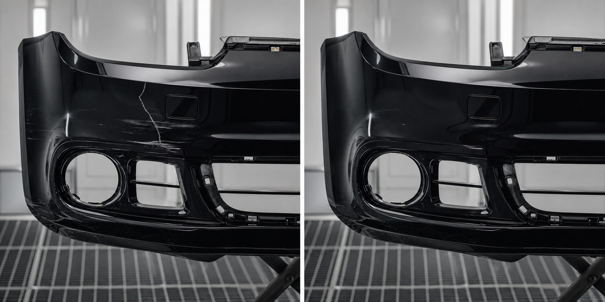
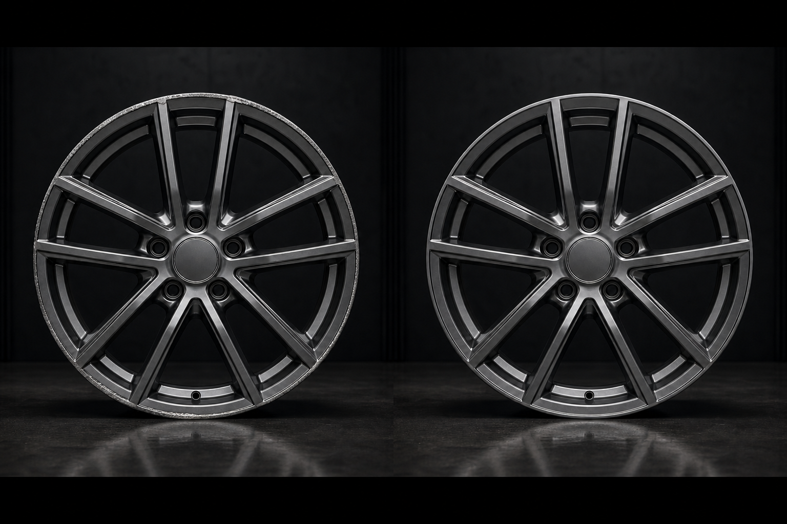
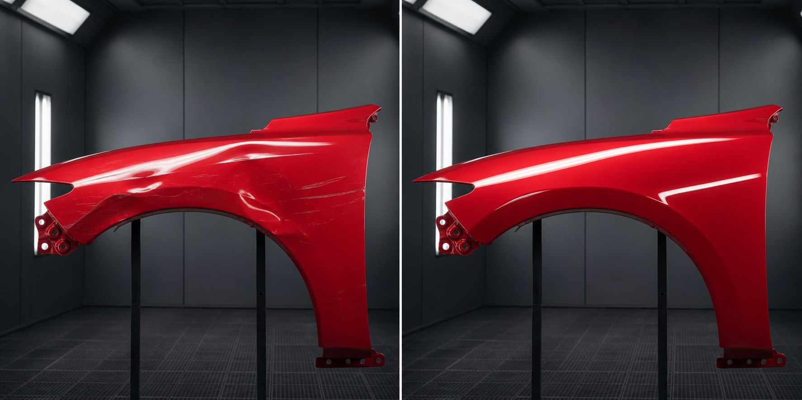

Calidad sin atajos
Procesos profesionales, materiales contrastados y control en cada fase.
Restauración · Precisión · Calidad
Especialistas en restauración de piezas de carrocería mediante procesos profesionales de chapa y pintura.
Sobre Nova Parts
Creemos que una pieza usada no es una pieza terminada. Con técnica, criterio y atención al detalle, puede volver a ofrecer el aspecto y la funcionalidad del primer día.
En Nova Parts combinamos experiencia en chapa, plásticos y pintura con procesos de preparación rigurosos. Cada pieza se inspecciona, repara y termina de forma individual para conseguir un resultado homogéneo, resistente y fiel al acabado original.
Procesos profesionales, materiales contrastados y control en cada fase.
Menos residuos, más aprovechamiento y una alternativa responsable.
Valoración honesta, comunicación clara y plazos definidos.
Experiencia multimarca
Qué hacemos
Desde una reparación localizada hasta la restauración completa, aplicamos el proceso adecuado a cada material y daño.
Grietas, deformaciones, roces y pérdidas de material.
Consultar →Rozaduras, oxidación y renovación completa del acabado.
Consultar →Soldadura, reconstrucción y refuerzo de componentes.
Consultar →Corrección de golpes y recuperación precisa de formas.
Consultar →Igualación de color y acabados bicapa o tricapa.
Consultar →Corrección de defectos y recuperación de brillo y profundidad.
Consultar →Proceso de principio a fin para piezas muy deterioradas.
Consultar →Piezas verificadas, listas para montar y con garantía.
Consultar →Especialidades
Trabajamos cada componente según su material, geometría y acabado para conservar ajuste, resistencia y apariencia original.
Plásticos deformados, grietas, anclajes y pérdidas de material.
Rozaduras, oxidación y acabados satinados, brillo o diamantados.
Corrección de golpes, recuperación de líneas y protección anticorrosiva.
Carcasas, embellecedores y componentes plásticos exteriores.
Reparación estructural y recuperación de texturas o color.
Recuperación individual cuando sustituir la pieza no es una opción.
Cómo trabajamos
Cada fase responde a un estándar concreto. Así garantizamos trazabilidad, consistencia y un acabado final a la altura de la pieza original.
Registramos la pieza y sus necesidades.
Evaluamos daños, material y viabilidad.
Recuperamos estructura, forma y anclajes.
Igualamos superficies antes de pintar.
Aplicamos color y protección en cabina.
Pulimos y perfeccionamos cada detalle.
Verificamos color, textura y geometría.
Protegemos la pieza para su transporte.
Antes y después
Compara el estado inicial con el acabado final. Restauraciones pensadas para recuperar tanto la estética como la funcionalidad.

AntesDespuésReparación de grieta, recuperación de forma y repintado completo.

AntesDespuésEliminación de roces y acabado integral en grafito satinado.

AntesDespuésCorrección de deformaciones e igualación de color tricapa.
Casos reales
Una selección de encargos completados con procesos adaptados a cada material, daño y acabado.
Soldadura de plástico, reconstrucción de soporte y acabado negro brillo.
Corrección de roces, preparación integral y acabado grafito satinado.
Recuperación de geometría e igualación precisa de color y brillo.
La diferencia Nova
Reduce el coste frente a una pieza nueva sin renunciar al resultado.
Color, textura y nivel de brillo acordes con el acabado de fábrica.
Productos de alto rendimiento para una reparación duradera.
Respaldamos nuestros trabajos con una garantía clara.
Una valoración específica y seguimiento directo de cada encargo.
Técnica, experiencia y cuidado manual donde realmente importa.
Opiniones
“El paragolpes parecía irreparable y ha quedado como nuevo. Cumplieron el plazo y me explicaron todo el proceso.”
“Restauraron las cuatro llantas y el tono es exactamente el que buscaba. Un trabajo muy fino y un trato directo.”
“Encontraron una alternativa mucho más razonable que comprar el capó nuevo. El resultado encaja y luce perfecto.”
Preguntas frecuentes
Si tu duda no está aquí, escríbenos. Valoramos cada pieza de forma individual.
Hablar con un especialista →Trabajamos con paragolpes, llantas, capós, aletas, retrovisores, taloneras, spoilers, molduras, carcasas y la mayoría de piezas de carrocería.
Envíanos el formulario con varias fotografías, el modelo del vehículo y una breve descripción. Te responderemos con una valoración inicial.
El plazo habitual es de 3 a 7 días laborables, según el daño, el material, el acabado y la carga de trabajo del taller.
Nuestro objetivo es reproducir color, brillo y textura OEM. Medimos el color y adaptamos el proceso a las especificaciones de cada pieza.
Sí. Los trabajos incluyen garantía sobre la reparación y el acabado, bajo condiciones normales de uso.
Es útil, pero no imprescindible. Comprobamos la referencia y medimos el tono real para compensar variaciones por edad, exposición y reparaciones anteriores.
Sí. Podemos coordinar la recepción y devolución de piezas correctamente embaladas. El transporte se valora de forma independiente.
En muchos casos sí. Reconstruimos o reforzamos anclajes cuando la reparación mantiene la seguridad y el ajuste correcto de la pieza.
Si el daño compromete la seguridad o el coste supera una sustitución razonable, te lo indicaremos antes de comenzar. La valoración siempre es transparente.
Contacto
Envíanos los datos básicos. Revisaremos tu caso y te contactaremos con una valoración sin compromiso.